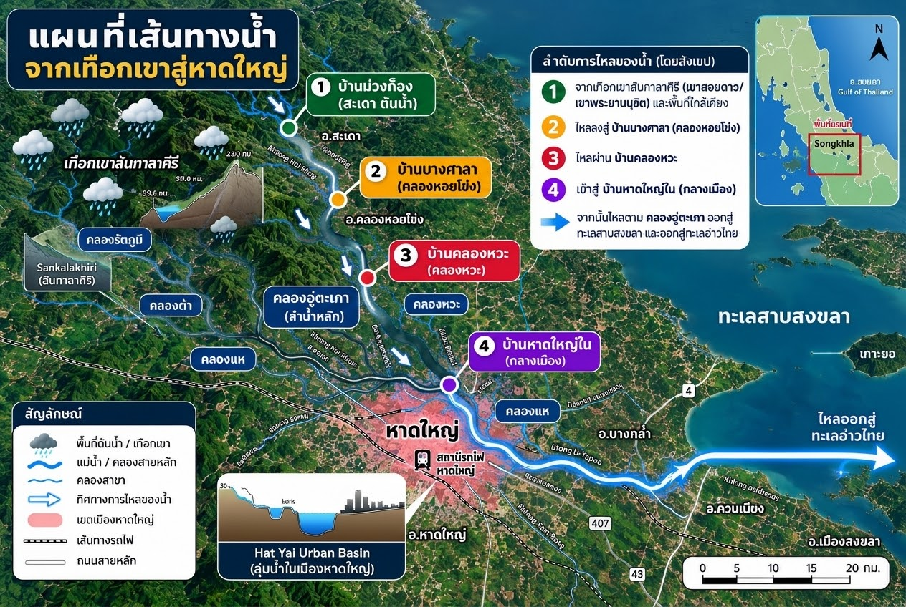

เฝ้าระวังน้ำท่วม อ.หาดใหญ่
กำลังดึงข้อมูล...
–
พยากรณ์ฝน 24 ชม. ข้างหน้า (ทุก 3 ชม.)
ตัวเลขบนแท่งพยากรณ์ = โอกาสฝนตก (%) · แท่งจาง = โอกาสต่ำ
เรดาร์ฝนสทิงพระ (ภาพล่าสุด)
ภาพจากเรดาร์สทิงพระ กรมอุตุนิยมวิทยา แสดงกลุ่มฝนที่กำลังตกอยู่ตอนนี้ในรัศมี 240 กม. ใช้ดูว่ามีกลุ่มฝนกำลังเคลื่อนเข้าหาดใหญ่ใน 1–2 ชม. ข้างหน้าไหม ส่วนกราฟด้านบนใช้ดูแนวโน้ม 24 ชม. · เวลาบนภาพเป็นเวลาสากล (UTC) บวก 7 ชม. = เวลาไทย · กดที่ภาพเพื่อดูภาพเคลื่อนไหว
ระดับน้ำคลอง (สถานีกรมชลประทาน)

เลื่อนซ้าย-ขวาเพื่อดูแผนที่ · แผนที่เป็นภาพประกอบ ตำแหน่งไม่ตรงมาตราส่วน · เปิดภาพเต็ม
ระดับน้ำกลางเมือง (X.44) ย้อนหลัง 24 ชม.
ฝนที่ตกจริง (สถานีวัดฝน)
ดูวิธีคิดและรายชื่อสถานี
ติดตามประกาศทางการ
เทศบาลนครหาดใหญ่ประกาศธงเตือนภัยและคำสั่งอพยพของเมือง ศูนย์เฝ้าระวังน้ำท่วมหาดใหญ่กล้อง CCTV ระดับน้ำ และข่าวสารในพื้นที่ กรมอุตุนิยมวิทยาประกาศเตือนพายุและฝนตกหนัก กรมป้องกันและบรรเทาสาธารณภัย (ปภ.)ประกาศภัยพิบัติและการช่วยเหลือ คลังข้อมูลน้ำแห่งชาติ (ThaiWater)ข้อมูลฝนและระดับน้ำทั่วประเทศดูวิธีคำนวณและเกณฑ์
ฝนพยากรณ์มาจากแบบจำลอง ECMWF (ศูนย์พยากรณ์อากาศระยะกลางแห่งยุโรป) ผ่านบริการ Open-Meteo ถ้าดึงไม่ได้จะใช้แบบจำลองที่ Open-Meteo เลือกให้แทน ส่วนระดับน้ำ ระดับทะเลสาบสงขลา และฝนวัดจริงมาจากสถานีของกรมชลประทาน กรมอุตุนิยมวิทยา กรมทรัพยากรน้ำ และ สสน. ผ่าน ThaiWater (อัปเดตราวทุก 30 นาที) มุมขวาบน: ค่าฝุ่น US AQI คำนวณจาก PM2.5 ของสถานีตรวจวัดกรมควบคุมมลพิษใน อ.หาดใหญ่ ตามเกณฑ์ US EPA เหมือน IQAir (ถ้ามีเครื่องหมาย * คือค่าประมาณจากแบบจำลอง) กดเพื่อดูรายละเอียดที่ IQAir · ภาพเรดาร์จากเรดาร์สทิงพระ กรมอุตุนิยมวิทยา · ใช้ประกอบการเฝ้าระวังเท่านั้น ไม่ใช่ประกาศทางการ กรุณาติดตามกรมอุตุนิยมวิทยา กรมชลประทาน และ ปภ. ด้วย